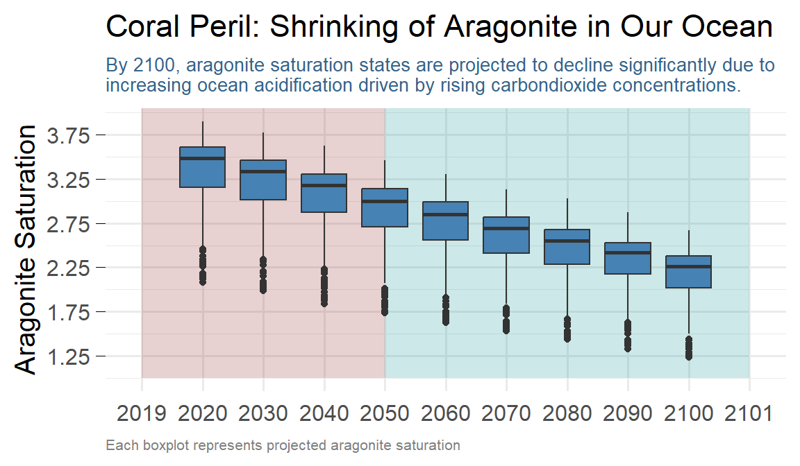

![]()
Introduction
The health of our oceans is under threat from human-induced climate change, particularly affecting the delicate balance of chemical processes that sustain marine life. One critical factor is the saturation of aragonite, a form of calcium carbonate essential for the formation of coral reefs and the shells of many marine organisms. As levels of atmospheric CO2 rise, so do the concentrations of dissolved CO2 in seawater, leading to a phenomenon known as ocean acidification. This blog post explores the peril of global ocean aragonite saturation using data visualization techniques in R, specifically with ggplot2.
I have created a step-by-step guide to assist in creating an equal area map of aragonite using R. The provided code can also be utilized to map other spatial information in the same raster format. The Robinson projection, which is adopted in this guide, offers a balanced solution for representing the entire globe as a two-dimensional image. This approach can be particularly useful for visualizing global spatial data in a way that accurately represents the proportional areas of different regions.
Packages
To begin, we need to load the necessary packages and set a global theme for our visualizations. Here is a list of the required packages for data manipulation, spatial data handling, and plotting:
Data
For this post, we’ll use data from a NetCDF file containing projections of aragonite saturation levels in the global ocean. The data spans from 2020 to 2100 and covers the entire globe. To explore the contents and structure of the NetCDF file Aragonite_median_ssp370.nc, we can use the tidync package in R. This package provides tools for efficiently working with NetCDF data. The following code snippet will load the dataset and display its information:
Data Source (1): Aragonite_median_ssp370.nc ...
Grids (3) <dimension family> : <associated variables>
[1] D0,D1,D2 : aragonite **ACTIVE GRID** ( 583200 values per variable)
[2] D0,D1 : longitude, latitude
[3] D2 : time
Dimensions 3 (all active):
dim name length min max start count dmin dmax unlim coord_dim
<chr> <chr> <dbl> <dbl> <dbl> <int> <int> <dbl> <dbl> <lgl> <lgl>
1 D0 lon 360 1 360 1 360 1 360 FALSE FALSE
2 D1 lat 180 1 180 1 180 1 180 FALSE FALSE
3 D2 time 9 2020 2100 1 9 2020 2100 FALSE TRUE The tidync function from the tidync package reads the NetCDF file and provides a tidy representation of its contents. This includes information about the variables, dimensions, and metadata contained in the file
The Aragonite_median_ssp370.nc NetCDF file contains three dimensions: longitude (lon), latitude (lat), and time (time). The lon dimension has 360 values representing longitudinal coordinates, the lat dimension has 180 values representing latitudinal coordinates, and the time dimension has 9 values representing the years from 2020 to 2100.
The .nc file format stands for NetCDF (Network Common Data Form), a widely used format for storing multi-dimensional scientific data such as climate and oceanographic variables. NetCDF files are efficient for handling large datasets, allowing easy access and manipulation of subsets of data. Next, we load the dataset Aragonite_median_ssp370.nc, which contains data on aragonite saturation.
[1] "vobjtovarid4: **** WARNING **** I was asked to get a varid for dimension named lon BUT this dimension HAS NO DIMVAR! Code will probably fail at this point"
[1] "vobjtovarid4: **** WARNING **** I was asked to get a varid for dimension named lat BUT this dimension HAS NO DIMVAR! Code will probably fail at this point"class : SpatRaster
dimensions : 180, 360, 9 (nrow, ncol, nlyr)
resolution : 1, 1 (x, y)
extent : 0.5, 360.5, 0.5, 180.5 (xmin, xmax, ymin, ymax)
coord. ref. :
source : Aragonite_median_ssp370.nc:aragonite
varname : aragonite
names : aragonite_1, aragonite_2, aragonite_3, aragonite_4, aragonite_5, aragonite_6, ...
unit : N/A, N/A, N/A, N/A, N/A, N/A, ... Then plot
we notice that the longitude are in 360 degree hence we use the rotate function from the terra package. This function adjusts the data to ensure the longitude coordinates are correctly handled from 0-360 to -180 and 180 extents
class : SpatRaster
dimensions : 180, 360, 9 (nrow, ncol, nlyr)
resolution : 1, 1 (x, y)
extent : -179.5, 180.5, 0.5, 180.5 (xmin, xmax, ymin, ymax)
coord. ref. :
source(s) : memory
varname : aragonite
names : aragonite_1, aragonite_2, aragonite_3, aragonite_4, aragonite_5, aragonite_6, ...
min values : 0.44, 0.38, 0.26, 0.31, 0.30, 0.30, ...
max values : 4.50, 4.36, 4.20, 4.07, 3.87, 3.73, ...
unit : N/A, N/A, N/A, N/A, N/A, N/A, ... The ar2 SpatRaster object lack coordinate reference system (CRS). The CRS defines how the spatial data’s coordinates (latitude and longitude) relate to locations on the Earth’s surface. Without this information, it is unclear what geographic or projection system the coordinates refer to, which can lead to misinterpretation of the data’s spatial context and hinder accurate spatial analysis or integration with other geospatial datasets. Adding an appropriate CRS would ensure that the data is correctly georeferenced and interpretable in a global or regional spatial context.
To fix the missing CRS in the SpatRaster object, use the terra package’s crs function to assign the appropriate CRS to the dataset. The WGS 84 (World Geodetic System 1984) coordinate system is the most widely used geodetic system, and it is also known as EPSG:4326. This system uses a geographic coordinate system with coordinates defined by latitude and longitude on the Earth’s surface.
class : SpatRaster
dimensions : 180, 360, 9 (nrow, ncol, nlyr)
resolution : 1, 1 (x, y)
extent : -179.5, 180.5, 0.5, 180.5 (xmin, xmax, ymin, ymax)
coord. ref. : lon/lat WGS 84 (EPSG:4326)
source(s) : memory
varname : aragonite
names : aragonite_1, aragonite_2, aragonite_3, aragonite_4, aragonite_5, aragonite_6, ...
min values : 0.44, 0.38, 0.26, 0.31, 0.30, 0.30, ...
max values : 4.50, 4.36, 4.20, 4.07, 3.87, 3.73, ...
unit : N/A, N/A, N/A, N/A, N/A, N/A, ... We also notice that latitude is arranged from 0.5 to 180.05 instead of -90 and 90 degree. To set the extent of the SpatRaster object ar2 to cover the entire globe from -180° to 180° longitude and -90° to 90° latitude, you can use the ext function from the terra package. This function allows you to specify the spatial extent of the raster.
The metadata of the file contain informationof the timeline, which contain data from 2020 to 2100 at the interva of ten years. Therefore, we need to replace the aragonite names to years, which are descriptive and easy to understand. To assign names to the layers of a SpatRaster object ar2 with the years 2020 to 2100, you can use the names function in R.
Visualizing Global Aragonite Saturation
To visualize global aragonite saturation levels, we’ll create a tile plot using ggplot2. This will provide a comprehensive view of how aragonite saturation varies across the globe. To visualize aragonite saturation levels with raster data, contours, and contour text, and facet it by each layer (year), you can follow this approach. Ensure you have the necessary packages loaded (terra, tidyterra and ggplot2).
First, we can use the raster data from the SpatRaster object ar2 to create a plot with contours and contour text using ggplot2. This can be achieved by
geom_spatrasterandgeom_spatraster_contour_textfunction from tidyterra package to plot the raster data, add contour lines, and label the contours with text.Since our SpatRaster object contains multiple layers representing different years, we can use the
facet_wrap()function in ggplot2 to create a separate panel for each layer (year) of the SpatRaster object. This allows us to compare the Aragonite saturation across different years in a single visualization.
Code
This plot gives us an initial impression of the spatial distribution of aragonite saturation levels across the globe. However, we can improve the visualization using the Robinson projection. The Robinson projection is well-suited for making world maps because it effectively minimizes size and shape distortions of continents. You can apply this projection string in functions that accept Proj.4 strings, such as those found in the sf or rgdal packages in R.
Define a color ramp for the oxygen gradient and plot the map.
Code
ggplot() +
geom_spatraster(data = ar2)+
# geom_sf(data=world.sf) +
coord_sf(crs = robin)+
# scale_fill_gradientn(colours = mycolors, trans = scales::sqrt_trans(), na.value = NA)+
scale_fill_gradientn(colours = hcl.colors(n = 12, palette = "RdBu", rev = F),trans = scales::sqrt_trans(), na.value = NA)+
cowplot::theme_minimal_grid()+
facet_wrap(~lyr, nrow = 3)The Final map
Code
ggplot() +
geom_spatraster(data = ar2)+
coord_sf(crs= robin)+
scale_fill_gradientn(
name = "Aragonite\nsaturation", breaks = seq(0,4,.4),colours = mycolors,
trans = scales::sqrt_trans(), na.value = NA)+
cowplot::theme_minimal_hgrid(font_size = 10)+
facet_wrap(~lyr, nrow = 3)+
# titles
labs(
title = "Coral Peril: Shrinking of Aragonite in Our Ocean",
subtitle = str_wrap("By 2100, aragonite saturation states are projected to decline significantly due to increasing ocean acidification driven by rising atmospheric carbondioxide concentrations.", width = 100),
caption = "Each map represents projected aragonite saturation",
x = NULL) +
theme(
strip.background = element_blank(),
legend.key.height = unit(1.2,"cm"),
axis.line.y = element_blank(),
axis.line.x = element_blank(),
axis.text.x = element_blank(),
axis.ticks.x = element_blank(),
axis.title.y = element_blank(),
axis.ticks.length.y = unit(5, "pt"),
axis.ticks.y = element_line(linetype = "solid", linewidth = .15),
plot.subtitle = element_text(size = 10, face = "plain"),
plot.title = element_text(size = 18, family = "fat"),
plot.caption = element_text(hjust = 0, size = 8, color = "grey50"),
# plot.background = element_rect(fill = "#d8cfd0"),
# panel.background = element_rect(fill = "#f2f1ef")
) Conclusion
In summary, the visualization brings attention to the different aragonite saturation levels in the world’s oceans and the possible consequences of ocean acidification on marine ecosystems. As aragonite saturation levels decline, it becomes increasingly challenging for marine organisms to build shells and skeletons, posing a threat to the diversity and ability to recover of coral reefs and other susceptible marine species.
Code
wio = ext(40,120,-45,10)
wio.vec = wio |> as.polygons() |> st_as_sf() |> st_set_crs(value = 4326)
abc = ar2 |>
extract(wio.vec, )
abc |>
sample_n(300) |>
pivot_longer(-ID, values_to = "data", names_to = "year") |>
ggplot(aes(x = year, y = data ))+
annotate(geom = "rect", xmin = c("2019", "2050"), xmax = c("2050", "2101"), ymin = 1, ymax = Inf, fill = c("firebrick4", "cyan4"), alpha = .2)+
geom_boxplot(fill = "steelblue")+
scale_y_continuous(breaks = seq(.75,4,.5), name = "Aragonite Saturation")+
# titles
labs(
title = "Coral Peril: Shrinking of Aragonite in Our Ocean",
subtitle = str_wrap("By 2100, aragonite saturation states are projected to decline significantly due to increasing ocean acidification driven by rising carbondioxide concentrations.", width = 85),
caption = "Each boxplot represents projected aragonite saturation",
x = NULL) +
theme(
axis.ticks.length.y = unit(5, "pt"),
axis.ticks.y = element_line(linetype = "solid", linewidth = .15),
plot.subtitle = element_text(size = 10, face = "plain", color = "steelblue4"),
plot.title = element_text(size = 17, family = "fat"),
plot.caption = element_text(hjust = 0, size = 8, color = "grey50"),
# plot.background = element_rect(fill = "#d8cfd0"),
# panel.background = element_rect(fill = "#f2f1ef")
) 
References
Citation
@online{semba2024,
author = {Semba, Masumbuko},
title = {Visualize the {Peril} of {Global} {Ocean} {Aragonite}
{Saturation} with Ggplot2},
date = {2024-06-15},
url = {https://lugoga.github.io/kitaa/posts/visualize_line2/},
langid = {en}
}